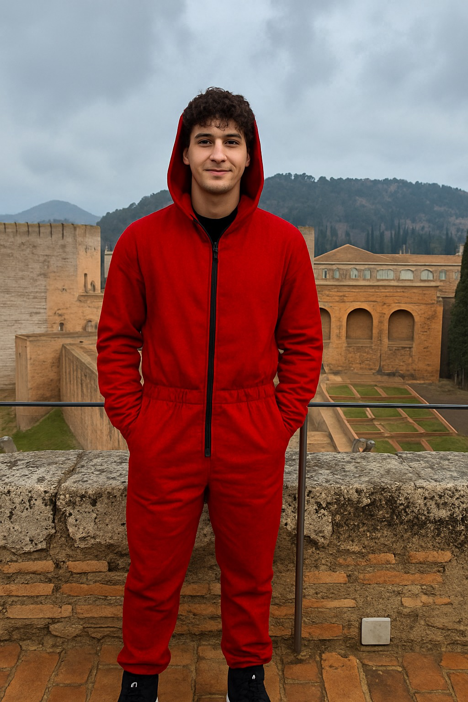

Sobre la Serie
La Casa de Papel es una serie española de suspense y acción que sigue a un grupo de ladrones, liderados por "El Profesor", que ejecuta ambiciosos atracos a la Fábrica Nacional de Moneda y Timbre y al Banco de España. Con nombres en clave de ciudades y un plan calculado al milímetro, el grupo enfrenta tensiones internas, negociaciones con la policía y giros inesperados, mientras explora temas de resistencia, estrategia y lealtad.
Sobre mi
Joaquín Piva es estudiante de la Licenciatura en Sistemas en la Universidad Argentina de la Empresa (UADE). Cursó sus estudios secundarios en la Escuela ORT, donde fortaleció su interés por la tecnología y la innovación. Apasionado por La Casa de Papel y la cultura audiovisual, también dedica parte de su tiempo a la música, siendo intérprete de guitarra. Combina sus intereses académicos y artísticos con una actitud perseverante y orientada al aprendizaje continuo.
